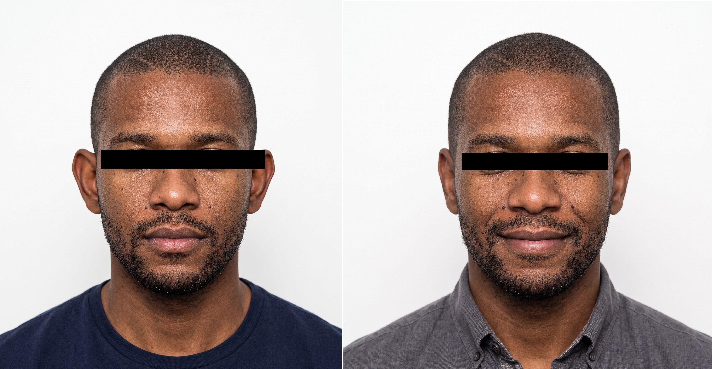
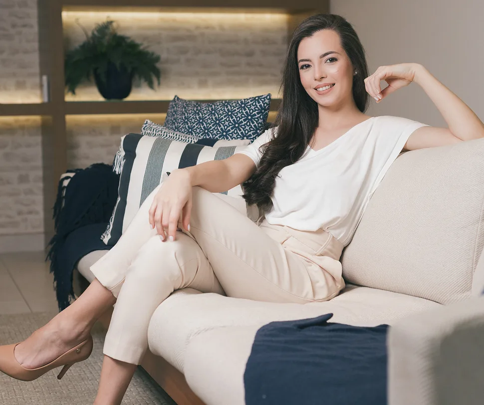
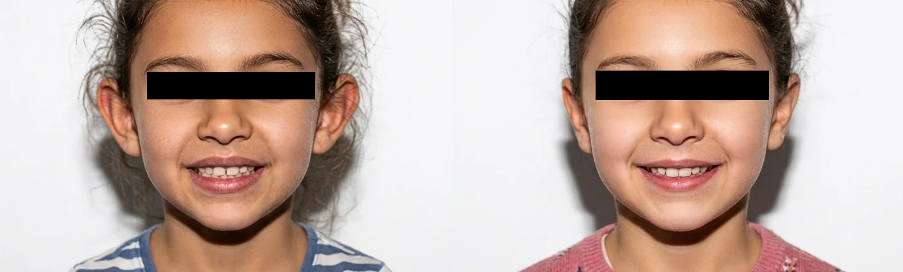
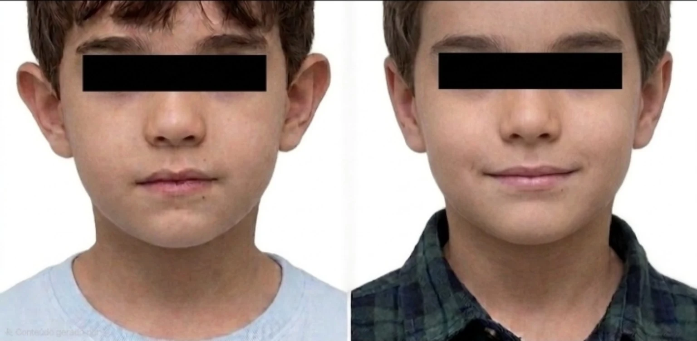
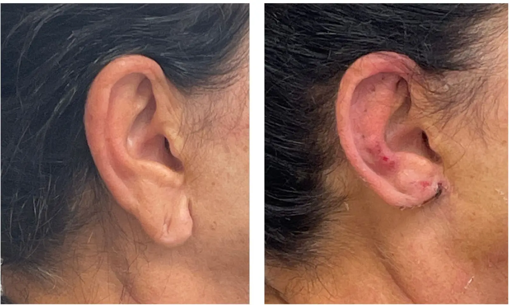

Caso 1 — paciente adulto
Resultado individual de redução da projeção das orelhas, preservando contornos e uma relação natural com o rosto.
Paciente adultoVista frontalResultado individual
Para quem já deseja avaliar a correção das orelhas proeminentes — e quer entender como projeção, formato, cartilagem e assimetrias entram em um resultado proporcional ao rosto.
Dra. Amanda Schroeder · Cirurgia Plástica · CRM-SP 191605 · RQE 110472 · Pinheiros
Consulta particular em Pinheiros · Nota fiscal para reembolso

Observe a relação das orelhas com o rosto, a manutenção das dobras e a diferença entre melhorar a proporção e deixar a orelha excessivamente próxima da cabeça.

Resultado individual de redução da projeção das orelhas, preservando contornos e uma relação natural com o rosto.

Redução individual da projeção, preservando curvas e relação natural com o rosto.

Outro resultado individual de redução da projeção, com melhora da harmonia entre os lados.
Casos reais com finalidade educativa. A indicação, a anatomia, a cartilagem, a cicatrização e os cuidados influenciam a evolução; resultados semelhantes não são garantidos.

Rasgos, alargamentos ou deformidades do lóbulo podem ser avaliados, mas não devem ser confundidos com a otoplastia para orelhas proeminentes.
As expressões do cotidiano ajudam a reconhecer a questão, mas não revelam sozinhas quais estruturas precisam ser tratadas.
Alguns adultos evitam penteados que exponham as orelhas, mesmo depois de muitos anos convivendo com a projeção.
Expressão popular para orelhas proeminentes. A projeção pode envolver dobras, concha, cartilagem e diferenças entre os lados.
Assimetrias de projeção, formato ou posição podem ficar mais evidentes de frente e em fotografias.
A percepção pode variar com cabelo, iluminação e posição da cabeça, mas a avaliação é feita em diferentes vistas.
O planejamento busca reduzir a desproporção preservando curvas e uma distância natural da cabeça.
A projeção pode resultar de mais de uma estrutura e pode ser diferente entre os lados.
A formação ou definição dessa dobra pode influenciar a projeção e o formato.
A profundidade e a posição da concha podem participar da distância entre a orelha e a cabeça.
Espessura, resistência e memória da cartilagem influenciam o planejamento e a estabilidade.
As orelhas não são idênticas. O objetivo é melhorar a harmonia, não prometer simetria absoluta.
Projeção, rasgos ou alargamentos do lóbulo podem exigir avaliação e tratamento próprios.
A decisão considera anatomia, saúde, motivação, expectativas e possibilidade de organizar a recuperação.
O objetivo é reduzir a projeção sem apagar as curvas naturais. A abordagem muda conforme as dobras, a concha, a cartilagem e as diferenças entre os lados.
A definição da anti-hélice pode ser parte do plano quando ela contribui para a projeção.
Em alguns casos, a profundidade ou posição da concha participa da relação com a cabeça.
Espessura, resistência e diferenças entre as orelhas orientam a individualização.
Pequenas diferenças residuais podem permanecer; naturalidade não é sinônimo de simetria absoluta.


A consulta organiza anatomia, naturalidade, cicatrizes, anestesia, riscos, recuperação e próximos passos antes de qualquer decisão.
Trabalho, sono, óculos, exercício, privacidade e compromissos entram no planejamento.
As incisões costumam ficar em regiões discretas, frequentemente no sulco posterior da orelha. A extensão varia conforme a anatomia e a técnica. Mesmo bem posicionadas, as cicatrizes existem e amadurecem ao longo dos meses.
Curativo, edema, sensibilidade e proteção da região.
Retornos, avaliação das incisões e adaptação dos cuidados.
O retorno depende da atividade, da exposição e da possibilidade de proteger as orelhas.
Atividades de contato precisam aguardar liberação específica.
Refinamento do edema, acomodação da cartilagem e amadurecimento das cicatrizes.
O uso de faixa ou proteção, a higiene, o cuidado com cabelo e óculos, a posição para dormir e a retomada dos exercícios são definidos conforme técnica e evolução. Sensibilidade, coceira e desconforto podem ocorrer temporariamente.
Segurança depende da avaliação clínica, do ambiente, da anestesia, do preparo e do acompanhamento.
Histórico de saúde, medicamentos, alergias, cicatrização e fatores de risco.
Escolhidos conforme extensão, condições clínicas e capacidade de colaboração.
Orientações sobre rotina, medicamentos, sono e proteção das orelhas.
Acompanhamento das incisões, da cartilagem, da simetria e de sinais de atenção.
Dra. Amanda com parte de sua equipe cirúrgica. O ambiente, a anestesia e a composição da equipe são organizados conforme o plano e as necessidades de cada caso.

Relatos reais sobre acolhimento, explicação detalhada e coerência na condução.
“Ótima formação profissional, coerência, acolhimento e me passa segurança.”Raphaela GarofoAvaliação pública no Google
“Sempre explica tudo com detalhes e tira todas as dúvidas.”Tais MasciaAvaliação pública no Google
“Esclareceu todas as minhas dúvidas desde a primeira consulta até o pós-operatório.”Nicoli CadioliAvaliação pública no Google
Materiais breves sobre consulta, segurança e ambiente. O plano definitivo continua sendo individual.
O que é observado antes de definir indicação, limites e próximos passos.
A modalidade é definida para cada caso, conforme plano e condições clínicas.
Conheça o ambiente de consulta em Pinheiros.
As respostas são referências gerais. Indicação, anestesia, técnica, cicatrizes, recuperação e riscos dependem da avaliação individual.
A consulta organiza anatomia, naturalidade, cicatrizes, anestesia, recuperação e próximos passos antes de qualquer decisão.